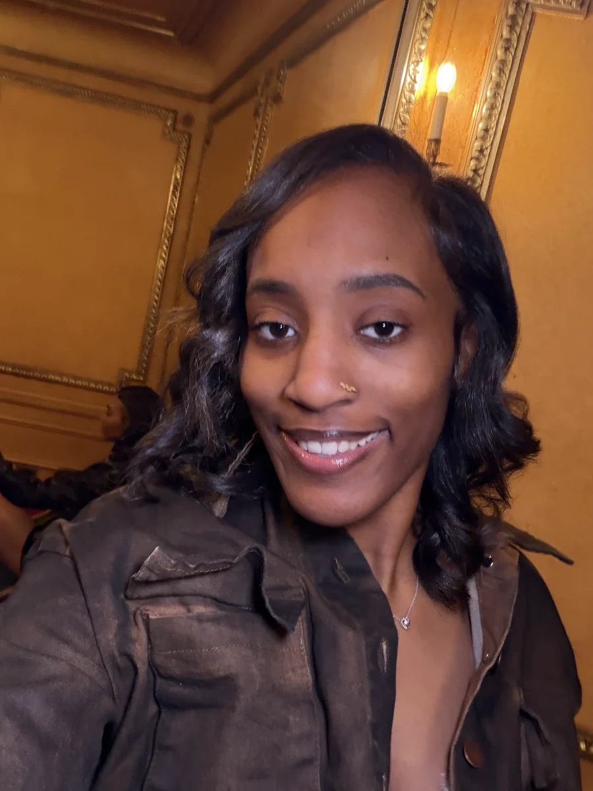

STAGE 01
People first
My path into tech didn't actually start with code. I studied Psychology at Michigan State University, where I became interested in how people think, learn, and interact with the world around them.

PORTFOLIO '26 ✦ DETROIT, MI
I'm Rheyya — a Web Designer & Developer blending creativity and technology to build thoughtful digital experiences for real people.
WordPress · UX/UI · Front-End · Content Management
“New to the field, but ready to make an impact.”
My path into tech didn't actually start with code. I studied Psychology at Michigan State University, where I became interested in how people think, learn, and interact with the world around them.

That curiosity eventually led me to the Apple Developer Academy, where I was introduced to product design and development and helped create my first iOS app, Off-Season.
Wanting to understand more of what happens behind the interface, I continued learning software development through Grand Circus, working with technologies like C#, .NET, JavaScript, databases, and web development.
I realized I loved the place where design + technology meet.
Today, I build websites and digital experiences that combine the technical skills I've learned with the part I've always enjoyed most — creating things that are useful, thoughtful, and visually engaging.
Now I'm looking for the opportunity to keep learning, contribute to a team, and make an impact.
Also worked with C# · .NET · Java · SQL · Angular · TypeScript
a few things that keep me inspired
new places, new perspectives
part hobby, part design inspiration
learning to see the world from a different angle
I can't help wondering, “but what if it looked like this?”
I'm currently open to junior web development, WordPress, web design, UX/UI, and digital opportunities.